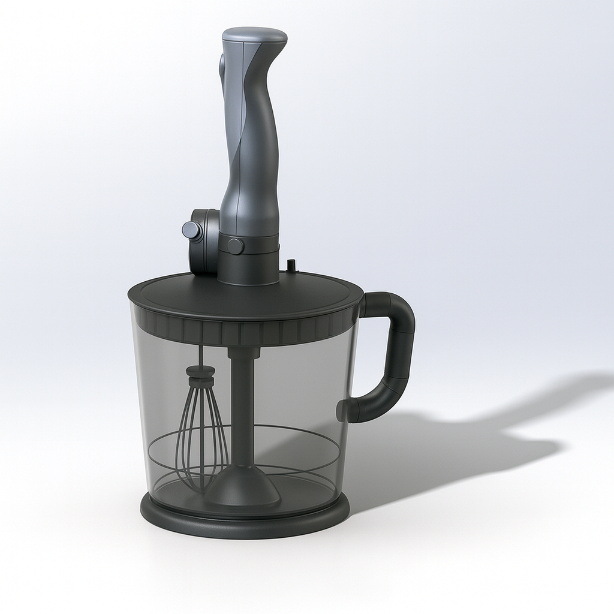
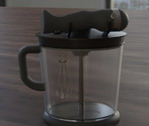
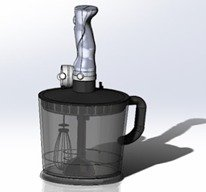
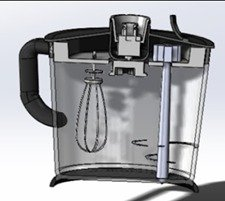
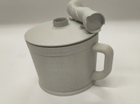
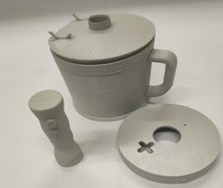
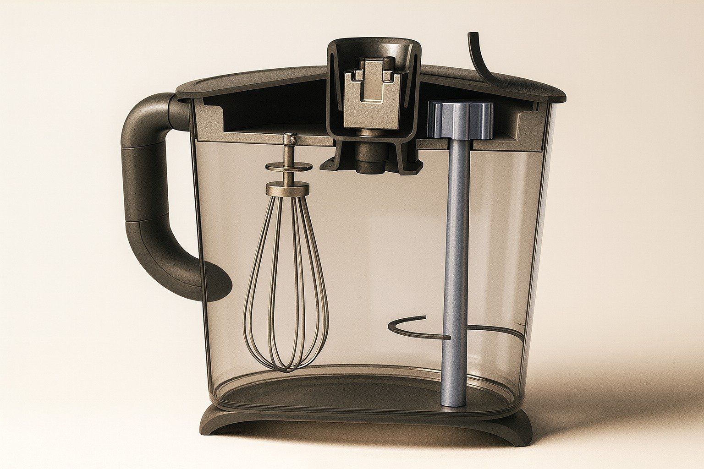

StaafmixersetHand blender set
In opdracht van Princess hun staafmixerset herontworpen, met een lagere kostprijs en een nieuwe functie. De set wordt vaak slordig opgeruimd, dus hebben we de dop zo ontworpen dat alle onderdelen na gebruik in de mixer passen.
Commissioned by Princess, we redesigned their hand blender set with a lower cost price and a new feature. The set is often stored untidily, so we designed the cap so that all parts fit inside the blender after use.
Opdrachtgever — PrincessClient — Princess
SolidWorks
De nieuwe dop en de onderdelen gemodelleerd.
Modelled the new cap and the parts.
RenderenRendering
Productbeelden van het herontwerp gemaakt.
Made product visuals of the redesign.
3D printen3D printing
Prototypes geprint om het ontwerp te testen.
Printed prototypes to test the design.
AssemblerenAssembly
Het prototype in elkaar gezet.
Assembled the prototype.
KostprijsCost price
Gerekend aan een lagere kostprijs.
Worked out a lower cost price.
Duurzaam ontwerpenSustainable design
Duurzaamheid meegenomen in het ontwerp.
Took sustainability into account in the design.





